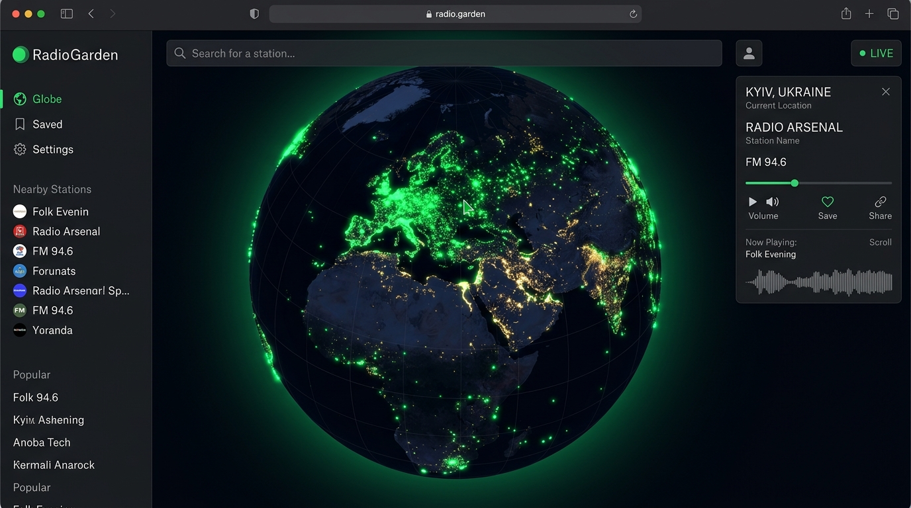
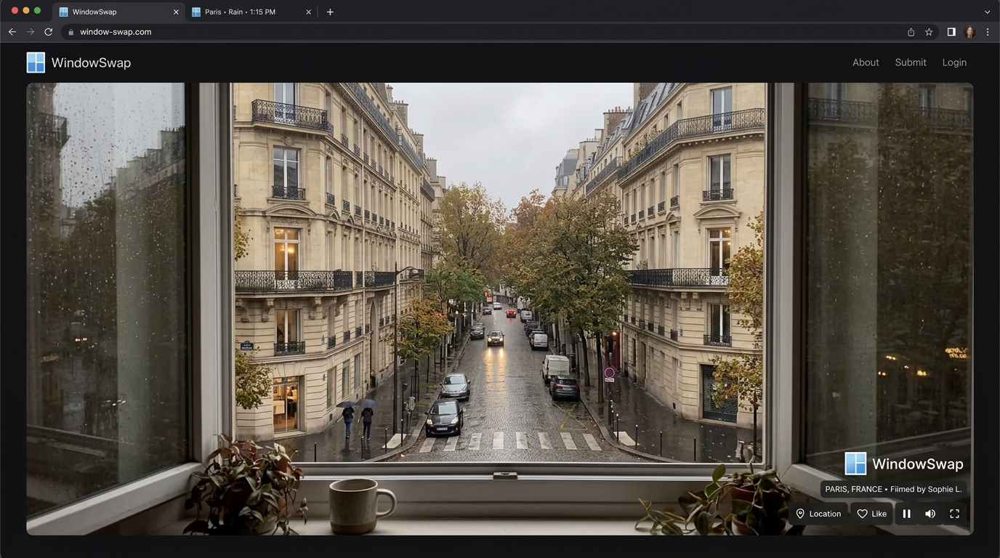
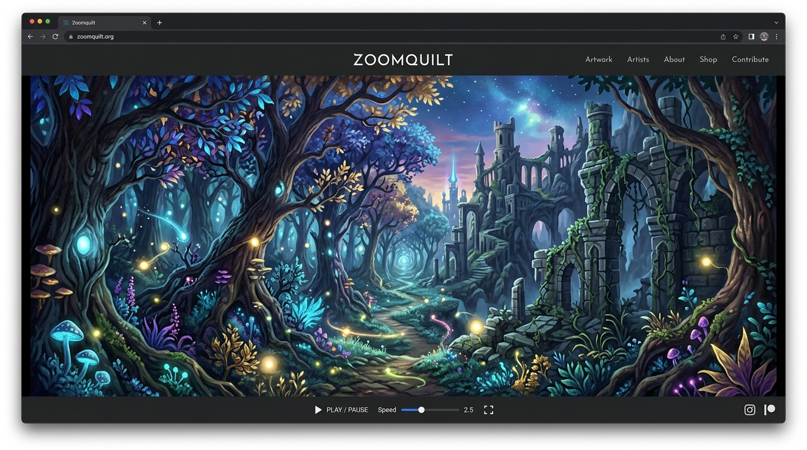
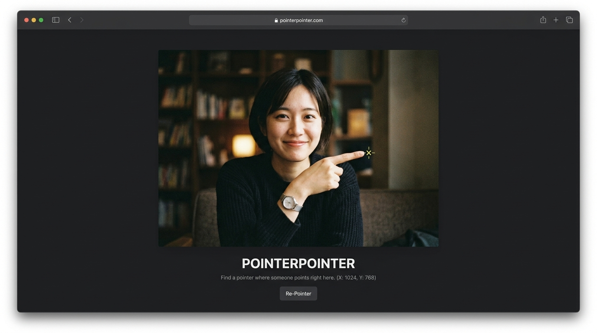

01 DISCOVERY NETWORK / CLASSIFIED
DISCOVER
THE
UNSEEN
Discover.
Explore.
Collect.
Atlas is a curated platform for discovering remarkable websites, creative projects, digital art, and hidden corners of the internet.
Signals are
more useful
when found.
ATLAS is an operator-grade discovery engine for mapping the forgotten, the buried, and the unseen layers of the internet.
We maintain the space between the surface web and the deep unknown: curated collections of hidden sites, dead drops, and signal intercepts that keep the network expanding.
SIGNALS
CRAWLERS
DISCOVER
Collections
Curated paths through the web.
Featured Signals
Curated websites worth exploring.
Playful internet experiments and visual rabbit holes.

ExplorationSpin the globe and listen to live radio stations worldwide.

ExperienceLook through someone else's window, anywhere on Earth.

ArtAn infinitely zooming collaborative painting.

GameMove your cursor — a photo will point right at it.
AI-generated human faces that never existed.
06 OPEN CHANNEL / ENCRYPTED
Submit your
signal.
Found a dead link that leads somewhere? A forgotten archive? A signal no one else has mapped? Drop your coordinates. The next discovery starts with you.
SUBMIT TO ATLAS ↗